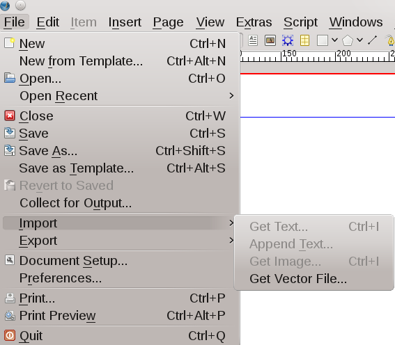
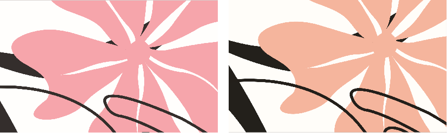

vector formats (bottom: SVG and EPS), viewed at zoom level 3000 % in Scribus
As you have learned, DTP is about assembling content in a visually pleasing manner. Thus, importing content is a major part of your workflow. This chapter is meant to assist you in getting external content into your document in the most efficient way, as well as helping you to avoid mistakes, either on your side or on the side of contributors.
After creating a new document with no content in it, trying to use File > Import would probably result in disappointment – if you hadn’t already learned that in general, content can only be imported into a frame, and the exception to the general rule is vector drawings:
|  |
We will start with hints about the import of bitmap images, continue with vector drawings and finish with text import, although there are some overlaps between the categories.
One of the things you must be aware of when using Scribus is the difference between a bitmap image and a vector image. A bitmap image consists of a fixed number of colored dots (pixels). This means (among other things) that such an image has a certain resolution, i.e., a number of dots within a two-dimensional area (a square). As a consequence, the resolution of a bitmap image has a major influence on the quality of its reproduction in different media, because the bigger the display area is, the bigger the dots and the uglier the result. Thus, image resolution is one of the things you have to be aware of when you are creating files for commercial printing.
Vector images, on the other hand, use mathematical (geometrical) formulas to describe the content in terms of lines and curves, which means that those images (henceforth referred to as “vector drawings” or simply “drawings”) can be enlarged almost endlessly without losing quality. It should be mentioned, though, that there are several methods to describe graphics geometrically, and not all are equal. As a general rule, PostScript-based drawings (EPS, AI) offer the most sophisticated vector model with superior quality even at building-sized displays. This is also true for PostScript fonts, including OpenType fonts. Slightly lower quality is provided by SVG drawings, and the difference between PostScript or SVG and formats like WMF, ODG or PICT is even larger. In many cases, however, these differences in quality are irrelevant, as they can only be perceived at very high magnification levels.
|
|  |
| Differences in quality between clipart formats (top: WMF and ODG) and more advanced vector formats (bottom: SVG and EPS), viewed at zoom level 3000 % in Scribus |
If you're still unsure about the difference between a vector and a bitmap image, there is an example that you can see for yourself. Go to: http://www.isc.tamu.edu/~lewing/linux, get the linked PostScript file, which is an EPS version of Tux and then right-click and download one of the GIFs. They are about the same in file size. Now create a new document in Scribus with two pages. Place the GIF on one page and then the EPS file on another and export a PDF. Then open the PDF in Adobe Reader, zoom in 200–400 %. Now you should see the difference …